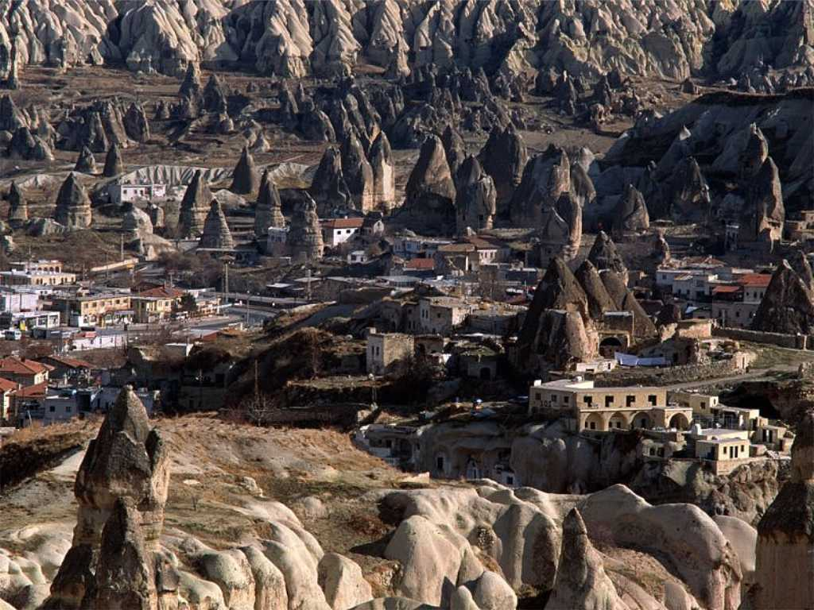
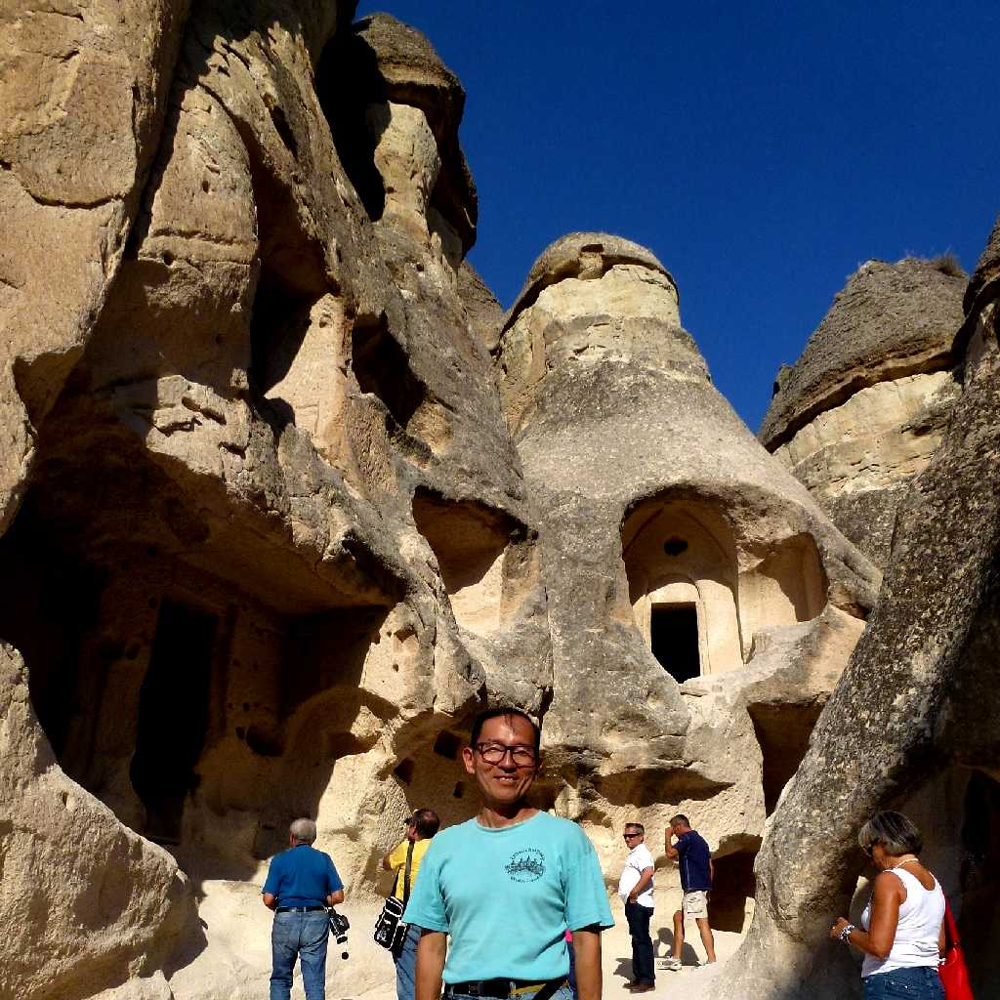
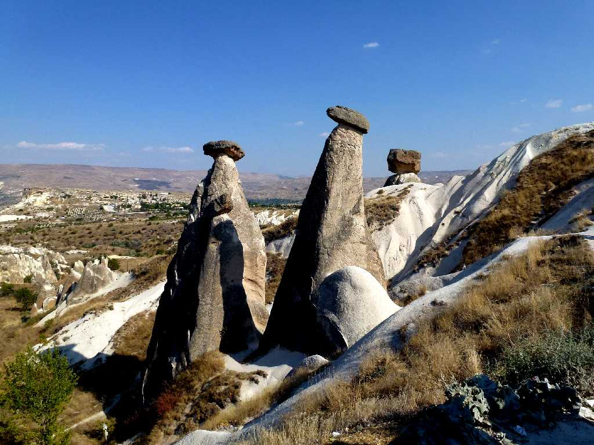
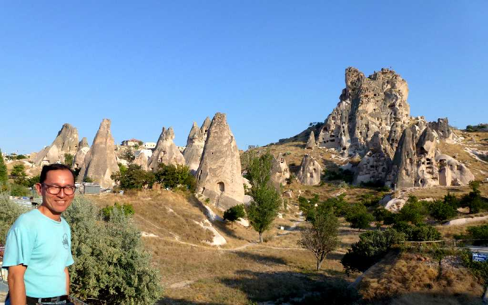

Göreme Cappadocia
NASAが初の月旅行の訓練地として選んだカッパドキアの奇岩の中に昔の宗教都市がある

September 20 2011 Göreme
Open Air Museum
外光が入らないため暗闇の教会と云われ最も保存状態が良いフレスコ画が残る１１世紀の岩窟教会 ３０年ぶりの訪問で修復が終わりキリストの誕生から昇天までのフレスコ画が美しい

Avanos
茸状の奇岩が美しいアヴァノス

September 20 2011 Valley Göreme